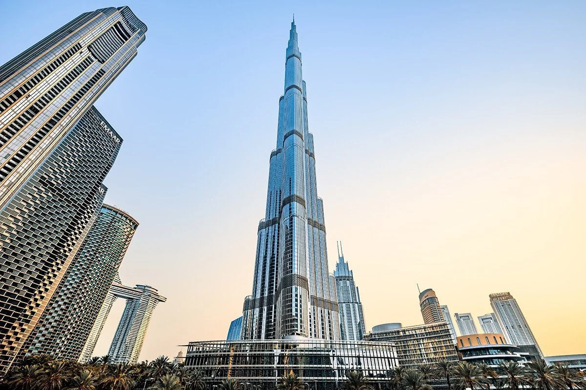
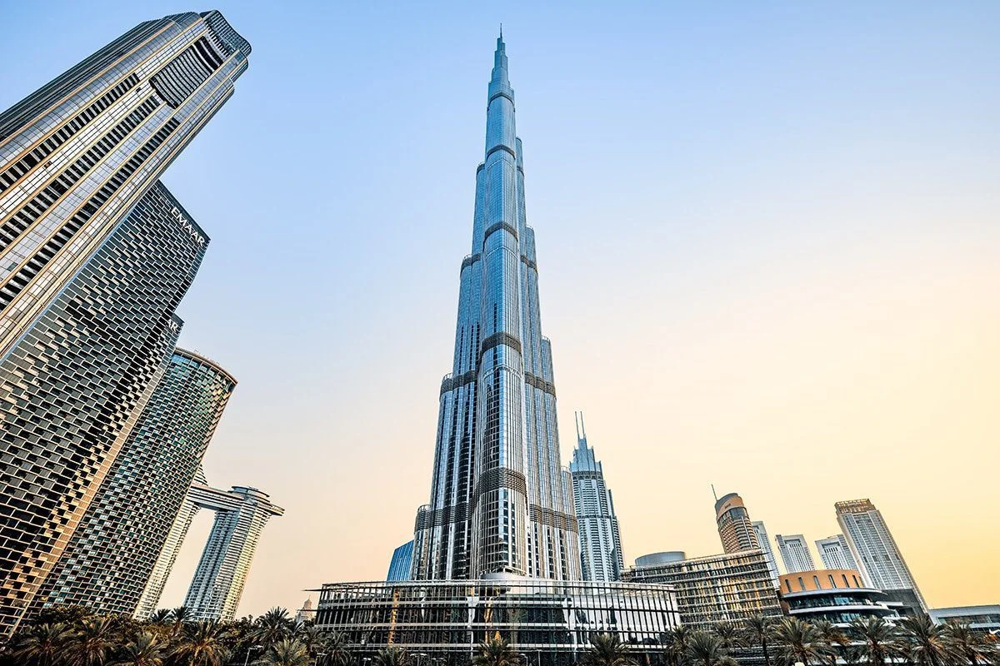
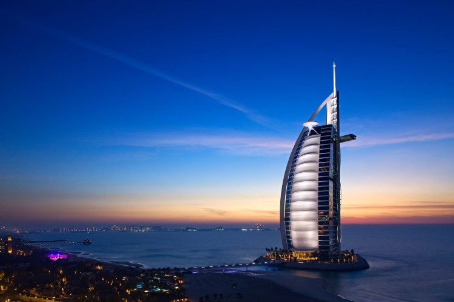

About us
Founded in 2000,Studio04# is a pioneering architecture firm focused on designing iconic skyscrapers that shape the future of urban landscapes. With over two decades of experience, we’ve become a leader in high-rise architecture, known for innovation, elegance, and structural excellence. Our firm has completed numerous successful projects around the globe—from sleek corporate towers to state-of-the-art residential skyscrapers. Each project reflects our commitment to smart design, sustainability, and visionary thinking. At Studio04#, we don’t just build tall buildings—we create landmarks that inspire.
Our popular projects
 

Burj Khalifa – Architectural Overview Location: Dubai, United Arab Emirates Height: 828 meters (2,717 feet) Floors: 163 (plus 2 additional levels below ground) Construction Completed: 2010 Architectural Firm: Skidmore, Owings & Merrill (SOM) Lead Architect: Adrian Smith Structural Engineer: William F. Baker The design of the Burj Khalifa is inspired by the Hymenocallis flower, a desert plant. Its Y-shaped floor plan provides maximum stability and panoramic views while reducing wind forces—a key innovation in skyscraper design. Style: Neo-futurism Materials: Glass, aluminum, reinforced concrete, and steel Exterior: Clad in reflective glazing with aluminum and textured stainless steel panels Core System: Bundled tube structure (to resist high winds and seismic forces) ignificance Tallest building in the world since its completion Combines residential, commercial, hotel, and observation spaces A symbol of Dubai’s rapid growth and ambition, and a global icon of architectural excellence
Princess Tower – Architectural Overview Location: Dubai Marina, Dubai, United Arab Emirates Height: 413.4 meters (1,356 feet) Floors: 101 above ground + 6 basement levels Construction Completed: 2012 Architectural Firm: Eng. Adnan Saffarini Office Developer: Tameer Holding Investment The Princess Tower held the title of the tallest residential building in the world from 2012 to 2015. Its design blends modern elegance with classic detailing, making it one of the most recognizable towers in Dubai’s skyline. Style: Postmodern Materials: Reinforced concrete with a glass and aluminum façade Use: 100% residential (apartments and penthouses) Amenities: Indoor and outdoor swimming pools, gyms, sauna, retail outlets, and observation decks Among the tallest residential buildings globally Features over 700 luxury apartments, offering views of the Palm Jumeirah and Arabian Gulf A prime example of Dubai's focus on vertical luxury living


Location: Jumeirah, Dubai, United Arab Emirates Height: 321 meters (1,053 feet) Floors: 56 (plus 3 below ground) Construction Completed: 1999 Architectural Firm: Atkins Lead Architect: Tom Wright (of WKK Architects) Developer: Jumeirah Group Design and Features The Burj Al Arab is one of the most iconic hotels in the world, designed to resemble the sail of a dhow (a traditional Arabian boat), symbolizing Dubai’s maritime heritage and futuristic ambitions. Style: High-tech architecture / Structural Expressionism Structure: Built on an artificial island, 280 meters offshore Foundation: Supported by 250+ concrete piles driven into the seabed Façade: Two "wings" that spread in a V-shape and enclose a vast atrium Interior: Lavish, with 24-karat gold leaf, marble, chandeliers, and aquariums Significance Often referred to as a “7-star hotel” (unofficially) for its unmatched luxury Features only suites, with the smallest being 170 square meters Includes helipad, underwater restaurant (Al Mahara), and a sky bar with panoramic views A global symbol of Dubai's luxury, innovation, and tourism industry
